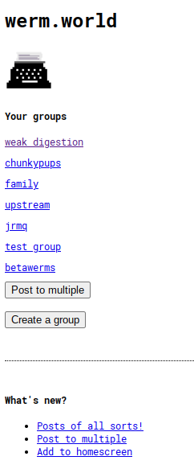
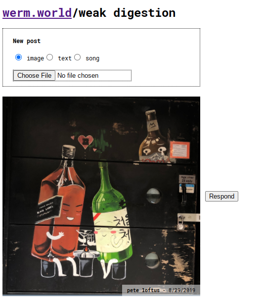

An attempt to create a micro social network for a few dozen friends
 ~2019. In one of my earlier bouts of {low tech}, I sought to decrease all time spent on large corporations' social media sites. The minor irony being that I relied on Google cloud infrastructure for fast implementation. An acceptable concession.

The site is a mobile-optimize React application, backed by Firebase with a few serverless functions for async operations such as image processing and email notification of new posts. The first iteration of the site, which allowed for posting of images, was built in a weekend and additional functionality like posting other types of media (text, audio) were added over time. One experimental feature was added to allow multiple media (from any user) to be attached horizontally to a post, with a horizontal scrolling element added to see them.
Users were organized into groups, and each group had one long feed of posts.
Usage died off for a variety of reasons. I hope to revive this project, potentially as a bona-fide app so that notifications can be sent (not by email). Everyone who used it remembers it fondly.